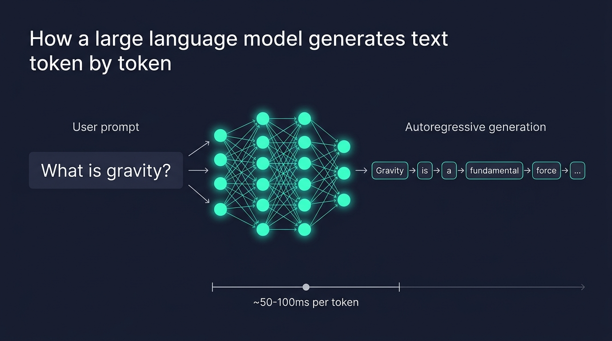
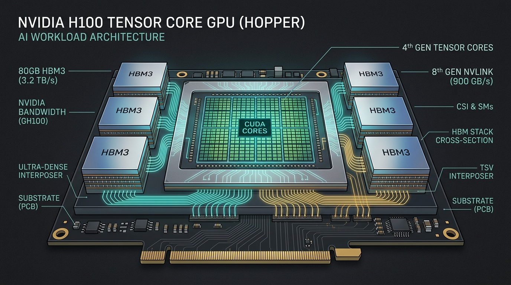
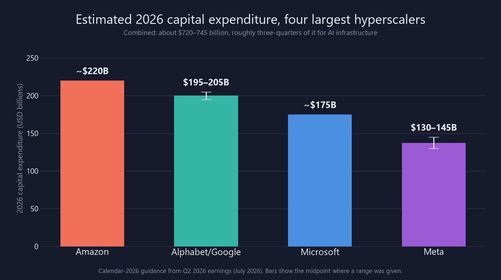
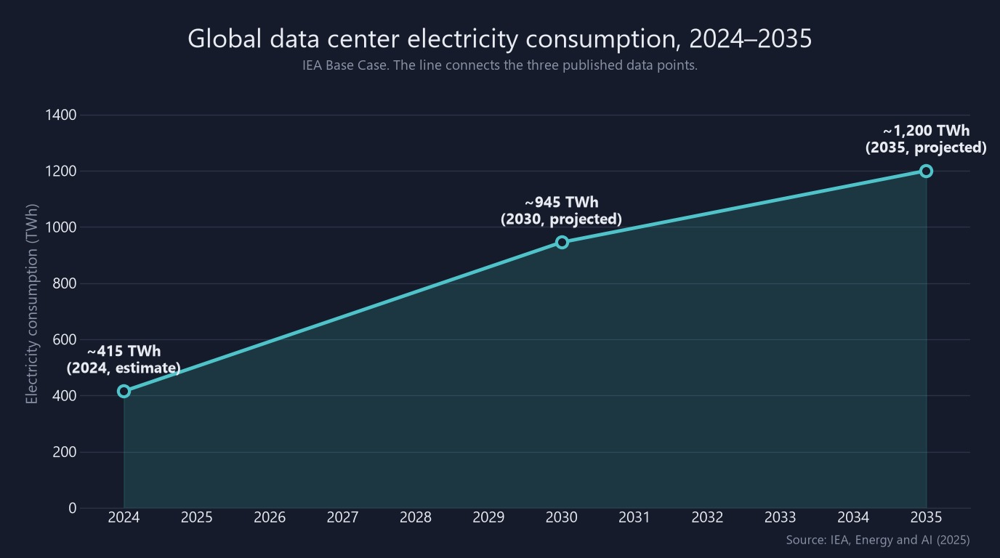

What actually happens between the moment you hit "Send" and the moment those words start streaming onto your screen? The answer involves specialized silicon, billions of dollars, and enough electricity to power small countries.
You type a question into ChatGPT, Claude, or Gemini. A few seconds later, words start streaming onto your screen. Often they're surprisingly coherent. Sometimes they're brilliant. And if you're unlucky, they're confidently wrong. The whole thing feels as effortless as a Google search or a text message. But behind those few seconds sits one of the most complex, expensive, and energy-hungry machines humanity has ever built. It runs on specialized hardware, billions of dollars in investment, and enough electricity to power small countries. This is the story of that hidden machinery.
Let's start at your keyboard. Say you type "Explain quantum computing like I'm five." Your browser wraps that text in a secure, encrypted web request and sends it across the internet to the company behind the AI. Depending on where you live, it might travel a few hundred miles or several thousand, through undersea cables and internet exchange points. So far, it's just like any other web request, such as ordering something on Amazon or loading a YouTube video. The magic, and the money, begins once your prompt reaches the data center.
This isn't a server closet in an office building. Modern AI data centers are purpose-built facilities the size of several football fields. Inside, tens of thousands of specialized processors sit in towering racks. Many of these buildings are in places with cheap electricity or cool climates, such as central Oregon, northern Virginia, the Nordic countries, and parts of Iowa. They hum with a constant, low drone. The air, or increasingly the liquid, flowing through them carries away enough heat to warm entire neighborhoods. And they exist for one main reason: to run the math that makes AI work.
First, your prompt has to become something a machine can work with. AI models don't read words the way you do. Instead, your text is chopped into small pieces called tokens. A token can be a whole word or just part of one. "Quantum" might stay as one token, while "computing" might be split into "comput" and "ing."
Each token is then turned into a long list of numbers called an embedding. Think of it as map coordinates for meaning. Words with related meanings land close together, so "king" ends up in a very different neighborhood than "banana." Each token is also tagged with its position, so the model knows which word came first. That matters because transformers, the design behind today's AI models, look at all your words at once instead of reading left to right.

Now comes the part that needs all that expensive hardware. Your prompt flows into the transformer, a design introduced in a famous 2017 paper called "Attention Is All You Need." It passes through dozens of layers of calculations, sometimes more than a hundred. Running a trained model like this to answer a question is called inference, and it's the focus of this story.
At each layer, a step called self-attention does the heavy lifting. It works out which words in your prompt matter most to each other. Take the sentence "The trophy didn't fit in the suitcase because it was too big." Attention is what helps the model figure out that "it" means the trophy, not the suitcase. To do this, the model compares each token with the others and scores how closely they relate. Across all the layers, that adds up to billions of calculations for a single prompt.
The model doesn't produce a whole paragraph at once. It writes one word at a time, each word the result of a separate trip through the entire neural network.
Here's the surprising part: the answer isn't written all at once. These models are autoregressive, which simply means they write one token at a time. At each step, the model scores every possible next token by how likely it is. It picks one, adds it to the text, and runs the whole process again. And again. And again. A few paragraphs can take three or four hundred of these steps, each one a full trip through the model.
That's why the text streams onto your screen word by word. Each step typically takes a few tens of milliseconds on today's hardware. The streaming effect isn't a design gimmick. It's the actual pace of the math.
The math transformers need is mostly one thing: multiplying huge grids of numbers, called matrices, many at the same time. That happens to be exactly what graphics processing units, or GPUs, were built for. GPUs were designed to draw video game graphics, which means doing the same calculation on millions of pixels at once. To a chip, multiplying giant matrices looks a lot like drawing a frame of Call of Duty. That happy accident is why NVIDIA, a company that spent decades selling chips to gamers, is now at the center of an industry worth hundreds of billions of dollars.

If you're using a major chatbot, your question is most likely being answered by an NVIDIA chip from its Hopper or Blackwell families. The NVIDIA H100, the workhorse of AI data centers since 2023, is not a gaming card. It's a specialized data center chip that costs $30,000 to $40,000 on its own. A complete eight-GPU server, like the DGX H100, can cost $300,000 to $500,000. And no AI company buys just one. The largest clusters link tens of thousands of GPUs with ultra-fast connections (NVLink and InfiniBand) that move data at hundreds of gigabytes per second.
NVIDIA holds an estimated 80 to 90 percent of the AI chip market by revenue. Its lead comes not just from fast hardware but from CUDA, its software platform, which has been the default toolkit for machine learning for about fifteen years.
A typical laptop or desktop processor (CPU) has 8 to 24 cores: a few powerful, flexible workers. An H100 has more than 16,000 CUDA cores: an army of simpler workers that all do the same step at the same time. AI math is exactly that kind of huge, repetitive job. Memory speed matters too. The H100's 80 GB of high-speed memory can feed data to those cores at 3.35 terabytes per second.
Why does memory speed matter so much? A model's parameters are the billions of numbers it learned during training, a bit like its stored knowledge. To write every single token, the chip has to read through those numbers. For a model with hundreds of billions of parameters, that's a mountain of data moving back and forth for every word. So during inference, the speed of memory is often the real bottleneck, more than raw computing power.
NVIDIA's newer Blackwell chips, including the B200 and GB200, pushed performance even further and became its biggest source of revenue through 2025 and 2026. An upgraded version, Blackwell Ultra (B300 and GB300), drove NVIDIA's record data center sales in 2026. Its successor, Vera Rubin, is now ramping into production. Demand was so intense that supply was effectively sold out for months after launch.
Rivals are trying to catch up. AMD makes its Instinct chips. Google designs its own TPUs (Tensor Processing Units). Amazon and Microsoft build their own chips too. But for now, if you ask a chatbot a question, the odds are strong that NVIDIA hardware is doing the heavy lifting.
Every time you send a message, the company behind the chatbot spends real money on your behalf: electricity, wear on its GPUs, cooling, networking, and staff. Start with electricity. According to the companies' own figures, a typical short question to a frontier model (one of the most advanced AI models, like the latest ChatGPT, Claude, or Gemini) uses about 0.24 to 0.34 watt-hours. Google reports 0.24 Wh for a median Gemini text prompt, and OpenAI says an average ChatGPT query uses about 0.34 Wh. That's in the same range as the long-cited estimate of 0.3 Wh for a Google search.
For one question, that's tiny. But multiply it by hundreds of millions of questions a day, across every AI service, and it adds up fast.
A simple "What's the capital of France?" costs a fraction of a complex problem. Reasoning models, the ones that "think" step by step before answering, use about 30 times more energy on average than models without reasoning, and in some tests hundreds of times more. That's because they write a lot of hidden "thinking" text before giving you the final answer.
Then there's how AI is sold. Subscriptions like ChatGPT Plus at $20 a month, or Claude Pro at a similar price, hide the cost from you. But heavy users can rack up computing costs far above what they pay. Developers and businesses pay differently: per token, through what's called an API. Those prices have dropped sharply thanks to competition and efficiency gains. Some simpler, low-cost models now charge less than $0.40 per million tokens, though the most advanced reasoning models still cost much more.
Two common tricks cut costs further. Prompt caching reuses earlier work when a new request starts with exactly the same text as a previous one. Batch processing groups many requests together and runs them at once. For some workloads, these save 50 percent or more.
"The four biggest tech spenders are projected to invest a combined $720–745 billion in a single year, mostly for AI."
Based on 2026 company earnings guidance and analyst estimatesTo see the scale, look at what the biggest tech companies are spending. Four hyperscalers, the giant cloud companies that run data centers at enormous scale, are projected to spend a combined $720 to $745 billion on capital expenditure in 2026. That means long-term investments in buildings and equipment. Amazon leads with roughly $220 billion, followed by Alphabet (Google), Microsoft, and Meta. That's up about 77 percent from around $410 billion in 2025.
Roughly three-quarters of that money goes to AI: GPUs and custom chips, high-speed networking, and the buildings to house it all. Analysts expect the total could pass $1 trillion by 2027. These aren't startups burning venture capital. They're among the most profitable companies on Earth, betting that AI infrastructure will define the next decade of computing.

All that money buys more than chips. It buys buildings, power systems, and cooling. A single modern AI data center can draw 100 megawatts or more, about as much electricity as 100,000 households, according to the IEA. The biggest campuses go far beyond that. OpenAI's Stargate site in Abilene, Texas, is designed for about 1.2 gigawatts. Meta's planned Hyperion campus in Louisiana could eventually reach 5 gigawatts.
Now zoom out to the whole world. According to the International Energy Agency (IEA), data centers used about 415 terawatt-hours of electricity in 2024. That's roughly 1.5 percent of all the electricity used on Earth. The IEA expects that to more than double to around 945 TWh by 2030, and to reach about 1,200 TWh by 2035. AI is the main driver: electricity demand from AI-focused data centers is projected to more than quadruple by 2030.

International Energy Agency, "Energy and AI" (April 2025), Base Case. The IEA projects data center electricity demand to more than double between 2024 and 2030, with demand from AI-optimized data centers more than quadrupling.
Power is only half the problem. The other half is heat. Nearly every watt a GPU uses turns into heat that has to be removed from the building. Traditional air cooling, essentially giant air conditioners, is hitting its limits. AI server racks now draw 80 to 120 kilowatts each, far more than older data centers were built to handle.
So the industry is switching to liquid cooling, which pipes coolant directly to the hottest chips instead of blowing cold air around the room. Market research firm TrendForce estimates that liquid cooling's share of AI chips grew from about 33 percent in 2025 to a projected 53 percent in 2026. NVIDIA's Vera Rubin platform is designed to be fully liquid-cooled.
Liquid cooling is also more efficient. Engineers measure this with a score called PUE (power usage effectiveness): the building's total power divided by the power that actually reaches the computers. A perfect score would be 1.0. Liquid-cooled sites can get below 1.2, compared with 1.4 to 1.6 for traditional air-cooled ones. In plain terms, more of the electricity goes into computing and less into cooling.
But cooling brings another problem: water. Cooling towers and evaporative systems use a lot of it. In dry regions, that has caused real conflict between data center operators and local communities. Rystad Energy projects that without major efficiency gains, data center water use worldwide could nearly triple by 2030, from about 222 billion liters in 2025 to 644 billion.
Operators are responding with closed-loop systems that recycle water, hybrid designs that use less fresh water, and in some cases programs that pipe waste heat to warm nearby buildings. New scores are appearing too. WUE (water usage effectiveness) tracks how much water is used per unit of computing energy. PCE (power compute effectiveness) tracks how much of a site's power capacity actually goes to computing hardware.
Engineers have found clever ways to squeeze more answers out of this expensive hardware. Here are the most important ones, in plain English.
The KV cache: keeping notes. Remember that the model writes one token at a time? Without help, it would redo its work on every earlier word each time it adds a new one. That's like rereading a whole book from the beginning before writing each new word. The key-value (KV) cache saves that earlier work in the GPU's memory, so the model only has to process the newest token. The catch: those notes take up memory, and they grow as the conversation gets longer.
PagedAttention: smarter memory packing. Some models now accept hundreds of thousands of tokens of input, so those notes can get huge. A technique called PagedAttention stores them in small blocks that are handed out only as needed, borrowing a trick computers use to manage their own memory. Less memory is wasted, so one GPU can serve more people at once.
A small, fast "draft" model writes several words ahead. The big model then checks all of them in a single step, like a senior editor approving a junior writer's draft. When the draft is right, which happens surprisingly often for simple text, you get several words for the price of one step. This can make answers two to three times faster with no loss in quality.
Continuous batching: no empty tables. GPUs work best when they handle many people's requests together. The old way was to wait for a full group, then process it. That left the chip idle whenever some requests finished early. Continuous batching works like a busy restaurant that seats new diners the moment a table frees up. The GPU stays busy and can handle three to ten times more work.
Quantization: rounding the numbers. Models are trained using very precise numbers, typically 16 or 32 bits each. For answering questions, much of that precision turns out to be unnecessary. Rounding the numbers down to 8 bits (formats called INT8 and FP8) roughly halves the memory needed compared with 16 bits, and it speeds up the math with little effect on answer quality. It's like rounding prices to the nearest dollar: easier to store, faster to add up, and close enough. Big models fit on fewer GPUs, and each GPU can serve more people.
FlashAttention: fewer trips to the pantry. Much of the time spent on attention goes to moving data in and out of memory, not to the math itself. FlashAttention reorganizes the work so the chip keeps what it needs close at hand. Think of a cook who keeps ingredients on the counter instead of walking to the pantry for each one. It can make the attention step two to four times faster.
Caching: never do the same work twice. Many requests start the same way. A company's chatbot might send the same long set of instructions along with every single question. A developer might ask several questions about the same 100-page document. Instead of making the GPU reread that identical text every time, AI providers can save the work from the first time and reuse it. This is called prompt caching. It's like a teacher who keeps a stack of photocopied worksheets instead of rewriting the same page for every student. Anthropic charges about a tenth of the normal input price for text read from its cache, and OpenAI, which applies caching automatically to long prompts, says cached input can be discounted by up to 95 percent. The catch: the reused text has to match exactly, and it only stays saved for a short time, five minutes by default on Anthropic's Claude.
What about frequently asked questions? Here the picture is more nuanced. Major chatbots like ChatGPT, Claude, and Gemini don't publicly document storing finished answers to popular questions. Each reply is normally written fresh, and prompt caching speeds up reading your request, not writing the answer. But many businesses that build their own AI assistants, such as customer support bots, add a semantic cache. It saves answers to common questions and recognizes when a new question means the same thing, even if it's worded differently. "How do I reset my password?" and "I forgot my password, what do I do?" can get the same saved answer without touching a GPU at all. In one study, this approach cut calls to the AI model by up to 68.8 percent. The trade-off: if the matching is too loose, someone can get a saved answer to a question they didn't actually ask.
Less GPU work. Work that's already been done isn't repeated, which frees expensive GPUs to serve more people.
Faster replies. The model starts answering sooner when it skips reprocessing long text, and a semantic cache can return a saved answer without running the model at all.
Lower cost. Reused input is billed at a steep discount, which makes AI cheaper for providers and customers alike.
Less energy. Every GPU step that's skipped is electricity that's never used.
These techniques are now built into the software that serves most major AI services.
| Trick | Everyday version | What it buys |
|---|---|---|
| KV cache | Keeping notes instead of rereading the book | Essential; makes chat practical |
| PagedAttention | Handing out memory in small blocks as needed | 2–4× more requests per GPU |
| Speculative decoding | A junior drafts, a senior editor approves | 2–3× faster answers |
| Continuous batching | Seating diners as soon as a table frees up | 3–10× more work per GPU |
| Quantization (FP8/INT8) | Rounding prices to the nearest dollar | About half the memory, faster math |
| FlashAttention | Keeping ingredients on the counter | 2–4× faster attention step |
| Prompt caching | Photocopying a worksheet instead of rewriting it | Up to 90–95% off reused input |
Here's the big economic shift underneath all of this. Training a frontier model means teaching it from scratch on vast amounts of text. It's hugely expensive, often tens or hundreds of millions of dollars for a single run. But training happens only occasionally. Inference happens every time anyone uses the model, and its cost grows with every user, every question, and every token.
With hundreds of millions of people now using chatbots regularly, inference has become one of the biggest costs AI companies face. Epoch AI estimates that OpenAI's computing power in 2025 was split roughly evenly between research and inference, up from a smaller inference share in 2024. The industry is moving from an era dominated by training to one dominated by inference. That shift is reshaping chip design (NVIDIA built Blackwell with inference efficiency in mind), data centers, and business models.
Training is a one-time cost. Inference is the cost that never stops. It scales with every user, every query, every token.
The type of task matters too. A simple text reply is cheap. An image costs more. Video costs much more. And AI agents, which don't just answer but plan, use tools, write and run code, browse the web, and try again, can use far more computing power than a normal chat. An agent working through a hard coding task for several minutes might produce thousands of hidden tokens and call the model dozens of times. Each call is another trip through the GPU cluster. One complex agent task can easily cost more than hundreds of simple chat messages.
Those words on your screen depend on a vast global supply chain: TSMC's chip factories in Taiwan, undersea cables between continents, power plants, cooling towers, and fiber optic links. Your $20 monthly subscription is a bet that you won't use more computing than the fee covers. For heavy users, that bet doesn't always pay off.
So what does this mean for you? Mainly, that the simple act of typing a question and getting an answer hides one of the most impressive engineering feats in modern computing. The price businesses pay per token is carefully set to spread the cost of chips, electricity, cooling water, networking, staff, and buildings across billions of tokens a day.
What's most remarkable is how fast all of this has come together. Five years ago, spending over $700 billion a year on AI data centers would have sounded absurd. The transformer design behind it all was published less than a decade ago. The tricks that make inference affordable are only three to four years old. The industry is building the airplane while flying it, racing to make AI faster and cheaper even as models grow larger and more people use them every day.
Next time you ask an AI a question and watch the answer stream in, think about what happens in those few seconds. Your words crossed the internet to a vast building humming with thousands of processors, each worth more than a car. Your text was chopped into tokens, turned into numbers, and run through a model with hundreds of billions of parameters. Specialized chips, many of them cooled by flowing liquid, performed trillions of calculations to predict your answer one word at a time. The power came from a grid that's straining to keep up. Then the answer streamed back to you as fast as it could be written. The interface is simple. The machinery beneath it is anything but.